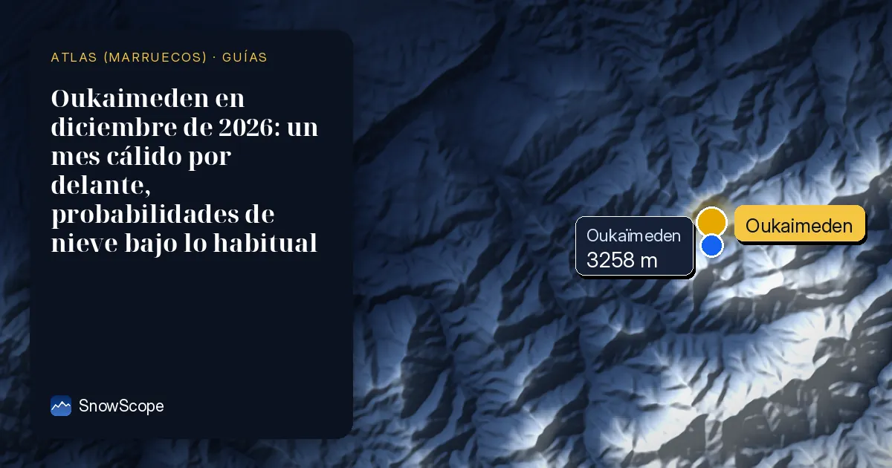

Oukaimeden en diciembre de 2026: un mes cálido por delante, probabilidades de nieve bajo lo habitual
Oukaimeden está desnudo el 10 de noviembre. Los 6 cm que cayeron en la cima la semana pasada se han ido, y la próxima semana no trae nieve fresca. El pronóstico estacional para diciembre es decididamente cálido en todo el Alto Atlas, y eso desplaza las probabilidades de nieve hacia abajo de forma pronunciada.
Consulta la previsión de nieve en tiempo real de Oukaimeden en la app SnowScopeEspesor de nieve, alertas de nieve polvo y mapa 3D, gratis.

Sin nieve en el suelo ahora mismo
El mapa muestra 0 cm en todas partes: base a 2600 m, media montaña a 2930 m, y la cima a 3260 m. Solo el 1 % del terreno dentro de 60 km presenta blanco. Mostramos la montaña desnuda en su lugar—las crestas altas de Toubkal donde la nieve se pega por primera vez cuando llega el invierno—para que veas dónde observar la apertura de la temporada.
La semana pasada dejó 1 cm a media altura y 6 cm en la cima, pero ninguno se quedó. Los próximos siete días no muestran nieve prevista a ninguna altura.
Perspectiva de diciembre: más cálido de lo usual, nieve más escasa
El mapa SnowScope compara las montañas del Alto Atlas alrededor de Oukaimeden con su propio historial. En toda la región, el 95 % del área muestra una señal de nieve de diciembre más pobre—menos lugares de lo habitual recibirán acumulación significativa. Ninguna de las 55 celdas de cuadrícula de montaña apunta a una perspectiva más nivosa.
La probabilidad de nieve nueva por encima del promedio de diciembre oscila entre el 29 % y el 43 % en toda la cordillera. Eso significa aproximadamente una oportunidad entre tres, en el mejor de los casos, de que este mes sea más húmedo que diciembre pasados.

Lo que diciembre suele traer, y cómo se ve este año
En un diciembre típico, las laderas altas de Oukaimeden alrededor de 3200 m reciben 41 cm de nieve nueva y retienen 26 cm en el suelo al último día del mes. La perspectiva para este año es 37 cm de nieve nueva pero solo 13 cm restantes el 31 de diciembre. El rango de incertidumbre es amplio: entre 0 y 29 cm es la banda más probable. La probabilidad de que la nieve sea más profunda de lo usual a fin de mes es solo del 26 %.
El calor es el factor impulsor. Los diciembre pasados que este pronóstico se parece más son 2010, 2023 y 1989—años cuando las tormentas del Atlántico fueron escasas y el aire de diciembre sostuvo más calor que frío. En tales meses, la nieve que cae se derrite rápidamente bajo el fuerte sol de invierno en roca desnuda, especialmente en elevaciones más bajas.


El sistema estacional europeo: calor casi seguro, señales mixtas sobre lluvia
Las 51 ejecuciones del pronóstico estacional principal europeo están sorprendentemente de acuerdo en un punto. El noventa y cuatro por ciento de ellas predicen un diciembre más cálido que el promedio de 1993-2016, con un calentamiento promedio de 2,2 °C en todo el Alto Atlas. Un consenso tan amplio sobre el calor ocurre raramente.
Las señales de precipitación dividen los pronósticos. El cincuenta y uno por ciento predicen un mes más húmedo de lo usual; el 49 % predicen uno más seco. En promedio, el pronóstico añade el 11 % a los 33 mm típicos de diciembre—un pequeño superávit. Sin embargo, en estas montañas, la temperatura importa más que la precipitación total. La nieve responde ajustadamente a lo que cae (correlación de 0,91 con precipitación) pero pierde terreno ante el calor. Unos pocos grados de calor extra convierten la precipitación que cae en lluvia en las laderas más bajas y aceleran el deshielo en las altas.

Cuándo observar, y cuándo persiste la nieve más tiempo
Una tormenta del Atlántico aún puede invertir la perspectiva mensual dentro de días, así que la perspectiva de diciembre es un cambio en las probabilidades, no un pronóstico fijo. Las tormentas de diciembre son raras en el Atlas, pero no imposibles. Cuando llega una—con aire frío en altura y precipitación organizada—las laderas más altas de Oukaimeden se ponen blancas rápidamente.
Si cae nieve, la cima (por encima de 3200 m) la mantiene más tiempo porque el aire se mantiene más frío en altitud y el ángulo del sol es menor. Las laderas de media montaña y la base pierden acumulación dentro de días una vez que regresa un período cálido. Por eso la nieve de principios de temporada en Oukaimeden es una ventana, no una base.
Consejos para esquiadores
- Consulta el pronóstico de tormentas de 7 días antes de planificar una visita a principios de diciembre. Un único sistema del Atlántico puede traer nieve a las laderas altas incluso en un mes cálido.
- Si llega nieve, esquía o camina por el terreno más alto (por encima de 3200 m) dentro de 48 horas de la tormenta; las elevaciones más bajas estarán desnudas dentro de días.
- Lleva capas: diciembre en el Atlas oscila entre tardes cálidas y noches frías, y las laderas soleadas pueden parecer primaverales incluso a 3000 m.
- Para senderismo por encima de 3000 m, lleva zapatos de roca o crampones; espera terreno mayormente desnudo en diciembre de 2026 e hielo repentino donde el agua de fusión se congela por la noche.
- Antes de salir fuera de pista después de una rara nevada de diciembre, consulta el boletín oficial de avalanchas para la región del Atlas.
Sobre estas cifras
Los espesores de nieve de las estaciones son la nieve más profunda en las pistas altas en la fecha indicada; son estimaciones para una zona, no una medida en un punto. Las previsiones pueden cambiar. Consulta siempre el boletín oficial de aludes antes de salir fuera de pista.
Citar este informe
Para investigación, docencia o prensa: cifras y gráficos reutilizables libremente bajo CC BY 4.0 con esta cita.
SnowScope (2026), Oukaimeden en diciembre de 2026: un mes cálido por delante, probabilidades de nieve bajo lo habitual, https://snowscope.app/blog/es/2026/11/oukaimeden-december-2026-snow-outlook.html, consultado el 2026-11-10
SnowScope (Atlas Labs). (2026, November 10). Oukaimeden en diciembre de 2026: un mes cálido por delante, probabilidades de nieve bajo lo habitual. SnowScope snow reports. https://snowscope.app/blog/es/2026/11/oukaimeden-december-2026-snow-outlook.html
BibTeX
@misc{snowscope2026oukaimedendecember2026sn,
author = {{SnowScope (Atlas Labs)}},
title = {Oukaimeden en diciembre de 2026: un mes cálido por delante, probabilidades de nieve bajo lo habitual},
year = {2026},
month = nov,
howpublished = {\url{https://snowscope.app/blog/es/2026/11/oukaimeden-december-2026-snow-outlook.html}},
note = {Published 2026-11-10 09:30 UTC; accessed 2026-11-10}
}· CC BY 4.0 · Métodos, datos y herramientas →
Sigue Oukaimeden
Gratis: un aviso cuando llega la nieve y la previsión cada mañana.